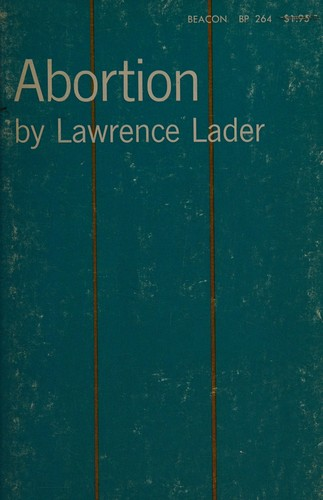
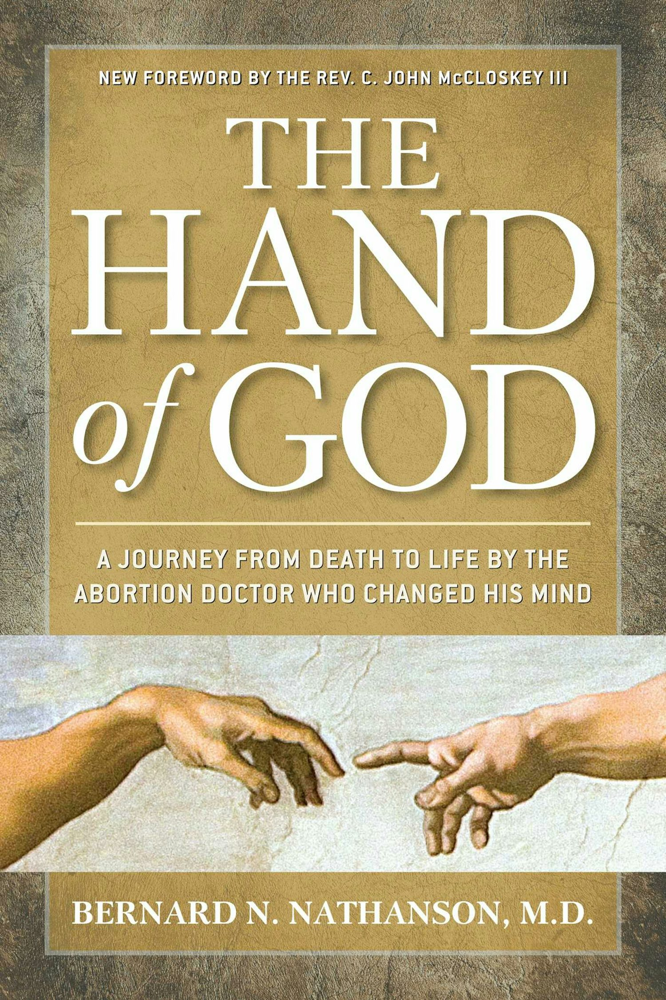
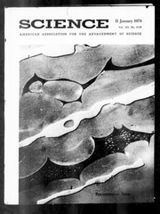

1:07:06 · 11 OPERE
Sue Ellen Browder: il dirottamento del movimento di emancipazione femminile.
Il filo del discorso
Il contributo presenta Subverted di Sue Ellen Browder, una memoria pubblicata nel 2015 sul lavoro a Cosmopolitan e sul rapporto tra rivoluzione sessuale e movimento delle donne. Il relatore valorizza una protagonista che rilegge criticamente il proprio passato e ammette di avere costruito storie e lettere di lettrici. Queste dichiarazioni sono riportate come testimonianza dell’autrice: non dimostrano che ogni contenuto della rivista fosse inventato, né che una singola esperienza spieghi l’intera storia del femminismo. La posizione etica e religiosa di Browder è parte del libro e della lettura proposta. La costruzione della Cosmo Girl introduce il problema di un personaggio editoriale che può orientare comportamenti reali. Il relatore collega questa tesi alla circolazione internazionale di modelli culturali e al presunto dirottamento delle rivendicazioni delle donne. La riunione di NOW raccontata da Browder assume un ruolo centrale, ma il programma originale del 1967 mantiene insieme opportunità di lavoro, protezione della maternità, istruzione, servizi per l’infanzia e diritti riproduttivi. Non si può quindi presentare l’abbandono di ogni obiettivo sociale come un fatto documentato dal solo racconto. La riflessione sulla maternità come cura rimane una proposta morale delle fonti, senza definire universalmente l’identità delle donne. Dollinger, Goya, Nietzsche, i Vangeli, Hobbes, Nathanson e Bernays compongono un percorso sulla persuasione e sulla possibilità di distinguere fatti e interpretazioni. Le analogie storiche richiedono precisione: gli episodi del Tonchino del 2 e 4 agosto 1964 vanno distinti, mentre Wannsee coordinò un genocidio già in corso. Il riferimento confuso dalla trascrizione automatica a divorzio e aborto è probabilmente riconducibile a Roe v. Wade del 1973, una decisione giudiziaria. Abortion di Lawrence Lader è effettivamente citato nell’opinione, ma questo non prova tutte le accuse statistiche né un ruolo causale esclusivo del libro. L’autobiografia The Hand of God di Nathanson resta un’opera diversa. Il contrasto tra homo homini lupus e homo homini deus sostiene una fiducia nella capacità umana di cura. Entrambe le formule compaiono però nell’epistola del De cive con ambiti distinti: la seconda non costituisce semplicemente una confutazione di Hobbes. Anche il richiamo alla ricerca di Condon sui neonati richiede delimitazione. Il paper individuato probabilmente è di Condon e Sander del 1974 e descrive sincronia tra movimenti e parlato adulto; non dimostra telepatia o capacità di anticipare parole. Il relatore dichiara di conoscerlo attraverso Browder, e questa mediazione viene conservata. Nella parte finale, il giornalismo investigativo è contrapposto alla propaganda e Pauli Murray diventa figura della richiesta di diritti indivisibili. Il memorandum originale del 1964 collega discriminazione razziale e sessuale, ma non certifica da solo ogni frase o motivo di dissenso attribuito alla riunione del 1967. I paralleli con il periodo pandemico, i giudizi sulle persone e le accuse di crimini restano opinioni del relatore, senza trasformarsi in diagnosi o accertamenti giuridici. L’invito conclusivo è leggere la testimonianza e interrogare il potere delle storie, mantenendo aperto il confronto con documenti e prospettive differenti.
I libri nel discorso

Subverted. How I Helped the Sexual Revolution Hijack the Women’s Movement
Copertina: Ignatius Press, edizione in brossura del 2 aprile 2019, 224 pagine.
Copertina autentica Ignatius rossa e magenta a retino, titolo Subverted giallo, autrice e sottotitolo bianchi. È la specifica brossura 2019 del catalogo editoriale, non una edizione riconosciuta nel filmato. Il racconto personale e la tesi dell’autrice sul femminismo restano attribuiti, senza assumerli come spiegazione completa e condivisa di tutti i movimenti delle donne.
Sue Ellen Browder, Subverted e il sottotitolo How I Helped the Sexual Revolution Hijack the Women’s Movement sono espliciti. L’opera è del 2015; la copertina rappresenta l’edizione del 2019.
Passaggio 0:07 ↗ · Fonti e libro ↗
Così parlò Zarathustra
Identificazione probabile
Copertina: Adelphi · Piccola Biblioteca Adelphi · riferimento
Immagine associata all’ISBN di riferimento e controllata visivamente; edizione e traduzione non identificate come quelle citate o lette nel video.
Nietzsche e scrivere con il sangue: titolo non pronunciato, identificazione probabile con Della lettura e della scrittura di Così parlò Zarathustra. Passo primario riscontrato.
Passaggio 11:00 ↗ · Fonti e libro ↗Schwarzbuch der Weltgeschichte. 5000 Jahre der Mensch des Menschen Feind
Copertina di un’edizione tedesca successiva dell’opera: Area Verlag, 2004, ISBN 9783899962536
L’immagine autentica appartiene alla ristampa Area 2004. Il video non certifica questa edizione e il relatore sceglie di non mostrarne la copertina nel filmato. La fotografia storica non viene presentata come immagine realizzata dal progetto. Non inferita una traduzione italiana pubblicata.
Hans Dollinger e titolo tedesco Schwarzbuch der Weltgeschichte con sottotitolo sui cinquemila anni espliciti. Libro nero della storia mondiale è la resa descrittiva del relatore, non edizione italiana attestata.
Passaggio 14:46 ↗ · Fonti e libro ↗
Il sonno della ragione genera mostri (El sueño de la razón produce monstruos)
Riproduzione della tavola 43 dei Caprichos: Los Caprichos, tavola 43, prima pubblicazione 1799; riproduzione dell’esemplare Wellcome 36752i.
Immagine autentica dell’incisione dalla Wellcome Collection, non una copertina libraria. L’opera è collegata probabilmente all’allusione; non è accertato l’esemplare mostrato nel filmato. La datazione della matrice e la pubblicazione della serie sono distinte.
Goya e il sonno della ragione che genera mostri: richiamo riconoscibile al Capricho 43.
Passaggio 29:05 ↗ · Fonti e libro ↗
Abortion
Identificazione probabile
Copertina di un’edizione Beacon dell’opera: Beacon Press, copia in brossura catalogata negli anni Sessanta, collana BP 264
Prima pubblicazione Bobbs-Merrill 1966; la copertina è di una successiva edizione Beacon. La data precisa della tiratura della copia non è certificata: non trasferito l’ISBN di una diversa ristampa 1971. Il video non identifica l’edizione e il titolo stesso resta probabile.
Larry Lader e suo libro usato nell’opinione della Corte suprema. Titolo non pronunciato: collegamento probabile ad Abortion 1966, effettivamente citato in Roe v. Wade 1973; nessuna coautorialità Nathanson inferita.
Passaggio 30:12 ↗ · Fonti e libro ↗
Vangelo secondo Matteo
Copertina del volume completo: San Paolo, 2014 · Nuova Versione dai Testi Antichi · edizione di riferimento
Vangelo secondo Matteo è un libro della Bibbia. L’immagine mostra il volume completo San Paolo di riferimento, non un’edizione autonoma del singolo libro e non una versione identificata nella citazione.
Lupi travestiti da agnelli e falsi profeti: passo riconoscibile di Matteo 7:15.
Passaggio 35:40 ↗ · Fonti e libro ↗
De cive. Elementi filosofici sul cittadino
Identificazione probabile
Copertina: Editori Riuniti · 2019
Copertina autentica dell’edizione di riferimento, controllata visivamente. Non identifica l’esemplare letto o citato nel video.
Hobbes e coppia homo homini lupus/homo homini deus. Titolo non pronunciato: identificazione probabile con l’epistola dedicatoria del De cive, che contiene entrambe le formule con ambiti distinti.
Passaggio 36:59 ↗ · Fonti e libro ↗Vangelo secondo Luca
Copertina del volume completo: San Paolo, 2014 · Nuova Versione dai Testi Antichi · edizione di riferimento
Vangelo secondo Luca è un libro della Bibbia. L’immagine mostra il volume completo San Paolo di riferimento, non un’edizione autonoma del singolo libro e non una versione identificata nella citazione.
Parabola del Buon Samaritano esplicita e riconoscibile in Luca 10:25–37.
Passaggio 37:32 ↗ · Fonti e libro ↗
The Hand of God. A Journey from Death to Life by the Abortion Doctor Who Changed His Mind
Copertina della ristampa 2013 dell’autobiografia: Regnery, ristampa in brossura 2013, ISBN 9781621570448
Il video richiama l’opera degli anni Novanta; questa è la ristampa 2013, esplicitamente distinta dalla prima 1996. Non certificata l’identità della copia del relatore. Scartati i collegamenti del distributore che restituivano no_book_cover; usata l’immagine autentica Regnery.
Bernard Nathanson, The Hand of God e periodo anni Novanta espliciti: prima edizione 1996. Autobiografia distinta dal libro Abortion di Lader.
Passaggio 41:45 ↗ · Fonti e libro ↗
Propaganda
Copertina: Apogeo · Saggi, marzo 2026 · traduzione e redazione Aldo Ballerini
Copertina autentica dell’edizione Apogeo del marzo 2026, successiva alla registrazione del video: è un riferimento bibliografico attuale, non l’esemplare citato nel filmato. Titolo originale dell’opera Propaganda, 1928.
Edward Bernays e Propaganda espliciti nel confronto tra informazione e persuasione.
Passaggio 42:35 ↗ · Fonti e libro ↗
Neonate movement is synchronized with adult speech: Interactional participation and language acquisition
Identificazione probabile
Copertina del fascicolo che contiene l’articolo: Science, vol.183, n.4120,11 gennaio 1974; articolo pp.99–101
Dichiarata copertina dell’intero fascicolo che contiene l’articolo, non copertina autonoma del paper né immagine sperimentale attribuita agli autori. La citazione non distingue univocamente il paper Science dal successivo articolo Child Development: collegamento bibliografico probabile e ambiguità conservata.
William Condon e sincronia neonati/parlato: titolo non pronunciato. Paper Science 1974 individuato probabilmente; esiste anche articolo distinto Child Development 1974 degli stessi autori. Nessuna certificazione di telepatia.
Passaggio 47:41 ↗ · Fonti e libro ↗